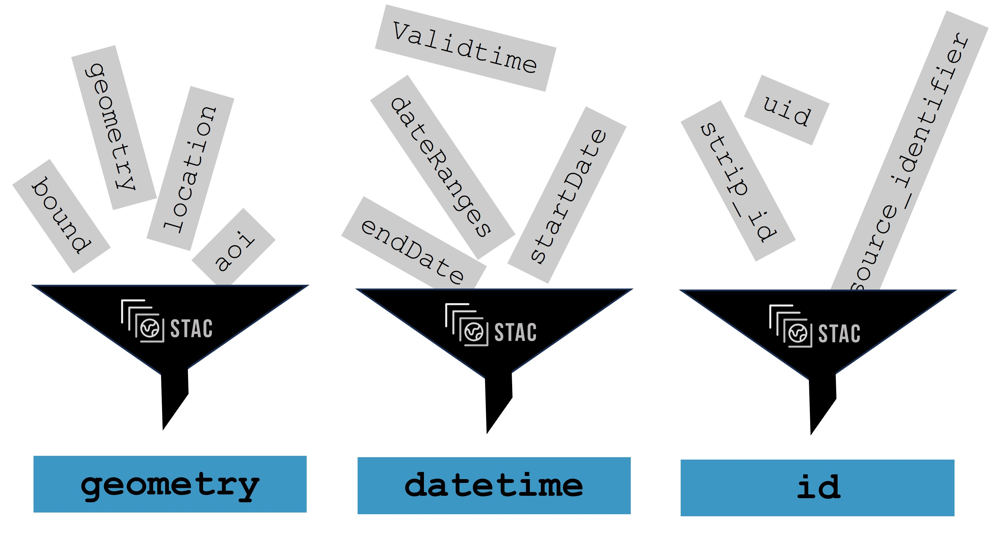

Data Properties#
Learning objectives#
Learn what are metadata and why they are important
Discover data properties and how to filter by them
What are data properties and metadata#
Data properties and metadata are sets of characteristics of geospatial data that serve different purposes. Commonly data properties are seen as attributes describing the image itself whereas, on the other hand, metadata describes the properties of a product.
Data Properties: Data properties refer to the characteristics and attributes of the geospatial data itself. These properties describe the actual content, structure, and values within the dataset. For raster data, properties can include information such as pixel values, cell size, spatial resolution, number of bands, and data format. For vector data, properties may include attributes associated with points, lines, or polygons, such as feature identifiers, names, classifications, or numerical values. Data properties are essential for understanding the data at a fundamental level and are used in the analysis, visualization, and processing tasks.
Metadata: Metadata, on the other hand, provides descriptive information about the data product. It serves as documentation that complements the data properties and offers additional context and details about the data. Metadata describes the origin, and characteristics, and helps with usage of the data, allowing users to discover, evaluate, and effectively utilize the data. It typically includes information such as the data source, acquisition parameters, coordinate reference system, temporal coverage, quality measures, and data access policies. Metadata plays a crucial role in data management, data sharing, and data interoperability by providing the necessary documentation and context for understanding and utilizing the data.
Both together provide a complete description of the data of our interest itself and how to work with them. Standardized ways how to describe metadata and data properties allow geospatial systems to work with data easily.

Figure: STAC standardizing Metadata.
Properties and metadata used for filtering#
In previous lesson we learned where to find data. Now it is time to look at how we can select only the data we want. Properties and metadata are a great help when we are not interested in the whole collection, but only in certain regions, times or even bands of selected satellite products.
In (many of) the data catalogs, we can filter by specific values for each satellite. Let’s talk more about some of them shortly
Dataset name/identifier: Filtering directly by name of a product as a unique name or identifier is assigned to the dataset, allowing it to be easily identified and referenced.
Time range: The temporal coverage or specific dates associated with the data acquisition. By this, we can easily select products from the same location with different dates of acquisition. This is particularly relevant for time-series or multi-temporal datasets.
Bounding box or other area of interest: Spatial Extent or the geographic coverage of the raster data, typically defined by the bounding coordinates (longitude and latitude) that encompass the dataset. Usually you can select your own area or interest as a rectangle/geometry or use a map window for taking the current extent
Mission: You can select by satellite used for data acquisition. In the case of Sentinel missions, you can select only Sentinel-1 as an example
Processing levels: Typically you can also select by processing level you are interested in for your missions. Typically Level-0 means unprocessed, raw data, and with higher number represents more corrections were applied.
Sensors or instrument: Selection by the output of a specific sensor or instrument.
Cloud coverage/polarization: Based on a mission, a selection filter can be made by specific parameters. For multi-spectral data such as captured by Sentinel-2, we can typically filter by cloud coverage in percentage. This is used as we are interested in lower cloud coverage percent for analysis. Similarly, specific polarizations can be selected for SAR data such as captured by Sentinel-1.
Orbit number: Typically integer number selects a specific orbit number user is interested in.
Orbit direction: For the majority of data types the selection is either ascending or descending.
Availability status/Timeliness: Some missions have different time availability for their data allowing them to select Near Real-Time acquisitions (approximately 3 hours after acquisition), raw data with a certain delay, or processed data later. It is also common that infrequently accessed data or older data than a certain threshold (years) can only be accessed ‘on demand’. Their ‘Availability status’ is usually set as ‘Archived’ or similar and they but must be ‘tasked to be brought online from archive storage’ by the user. This operation usually takes minutes to hours to complete. The user of the platform can later access the catalog again and hopefully the product have been brought online in the meantime.
In the examples above it also became more clear why a standardized way of expressing the metadata is important. For example, how do you know whether the cloud cover is a percentage expressed in a range from 0 to 1 or from 0 to 100? How would you filter on this property, if both scales would be mixed?

Video content in collaboration with Matthias Mohr (Major STAC contributor).
“Having metadata in a standardized format makes your data available to others in a simple and unified way. Similarly, you can find and work with the data of others more easily. You can achieve these benefits with STAC.”
Metadata and properties which are not typically used for filtering#
Many metadata are contained within the product but are not used for filtering on the platforms or accessing hubs directly. Among these is for example Author of the dataset or Licence. You should be able to get all information about those in data metadata when you are accessing the data itself or on the general page with information.
Usually it is unfortunatelly not possible to filter by or search by direct data properties, e.g. by values in data.
Dimensions#
Dimensions are important description of data and their properties. More information about dimensions of data and datacubes was covered in the lecture about Datacubes
x, y and sometimes z - Spatial dimension of data
temporal/time dimension - capturing the time aspect for time series analysis
Value Types (data types)#
Once we have selected data products we are interested in, we can look directly into values to select what we are interested in. Common data types representing measured values are these:
bitmask 0/1
8bit 0-255
UInt16 - 0-65k
Int16 - -32k - 32k
Float32
Further Reading#
References#
Quiz#
Which of the following is not considered as Data Metadata
[( )] Instrument
[( )] Licence
[(x)] Values from sensors
Which of the following is not considered as Data Properties
[(x)] Licence
[( )] Pixel values
[( )] Number of bands
Which of these properties and metadata are commonly used for filtering when searching data?
[(x)] Bounding Box
[( )] E-Mail Adress
[(x)] Time Range
[(x)] Sensor
[( )] Telephone Number
[(x)] Cloud Coverage
Which statements about the advantage of filtering data by metadata and properties are true?
[( )] All images are considered for subsequent analysis.
[(x)] Only images that are relevant are considered for subsequent analysis.
[(x)] The amount of data is reduced before starting the actual analysis.
Removed until exercise is accessible: Is the same number of products findable on all plafforms and in all ways? In the last chapter, there was exercise about finding Sentinel 2 L2A products over the island of Sardinia between 1.9.2023 and 30.9.2023 with cloud coverage less than or equal to 20% on Copernicus Dataspace via Web Browser. Correct answer was 59. Is the same number returned by programatically accessing catalog with code?
[(x)] Yes
[( )] No
Removed until exercise is accessible: Following the exercise with gdalinfo, answer following questions about the raster used there:
What is the NODATA value?
[[0]]
Removed until exercise is accessible: What are the coordinates of upper left corner in degrees?
[[72d52'14.58"E, 32d31' 9.58"N]]
Removed until exercise is accessible: What is the EPSG code of the raster?
[[4326]]